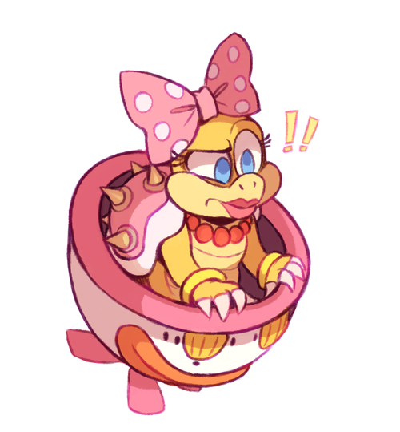

Projects I have completed on my own time, either for learning, or for fun:
I have learned how to create 3D models, as well as importing them into projects and animating them.
One of the first models I created in Blender:
I have improved my level of detail over time:
In a short amount of time, I taught myself how to remove unwanted color or backgrounds fom animated images, and / or how to create animated images myself using Adobe Photoshop.
Here is a personal project where I removed the white space from this animated .gif of a Snorlax:
| Original: | My edit: |
|---|---|
 |
 |
I have also learned how to merge images together to create new projects out of other source materials.
Here I placed the Pokémon Slowbro into a "Koopa Clown Car" using a manga render and an alternate fanart of the Koopaling Wendy, (because I wanted the pink car):
| Sources: | My edit: |
|---|---|
|  |  |